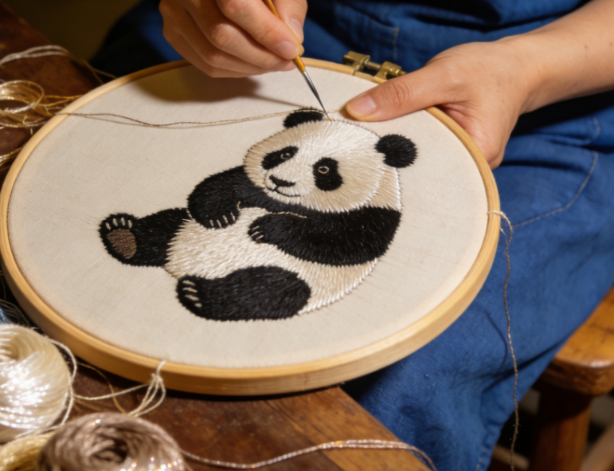
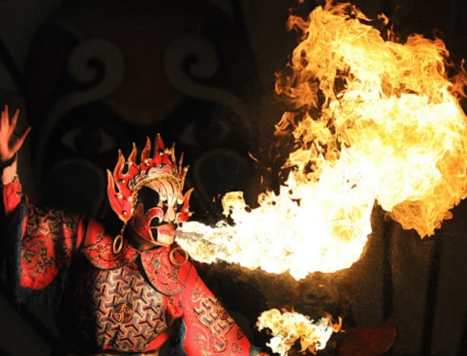
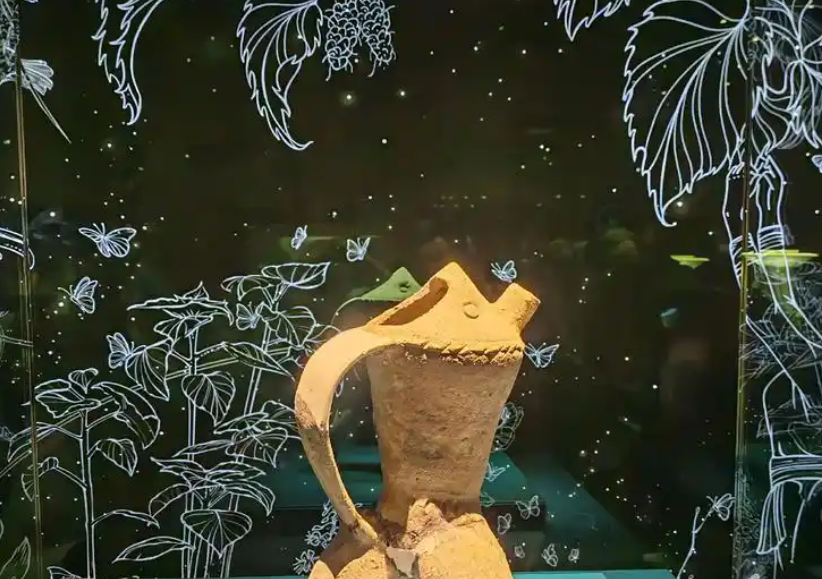

From ancient Shu civilization treasures unearthed at Sanxingdui to the awe-inspiring Leshan Giant Buddha carved into a cliff face, Sichuan's cultural landmarks span over three millennia of Chinese history and continue to inspire wonder in visitors from around the globe.

One of China's four great embroidery traditions, Shu Embroidery dates back over 2,000 years. Master embroiderers use over 130 different stitches to create stunning works depicting pandas, landscapes, and flowers on silk fabric, representing the pinnacle of Sichuan's artisanal heritage.

Sichuan Opera is renowned for its mesmerizing face-changing performance, a closely guarded art form where performers switch elaborate masks in fractions of a second. Combined with fire-breathing, acrobatics, and soulful singing, it creates a theatrical experience unlike any other in the world.

Discovered in 1986, the Sanxingdui archaeological site revealed a mysterious Bronze Age civilization that flourished over 3,000 years ago. The extraordinary bronze masks, golden artifacts, and jade treasures unearthed here reshaped our understanding of ancient Chinese civilization and the legendary Shu Kingdom.